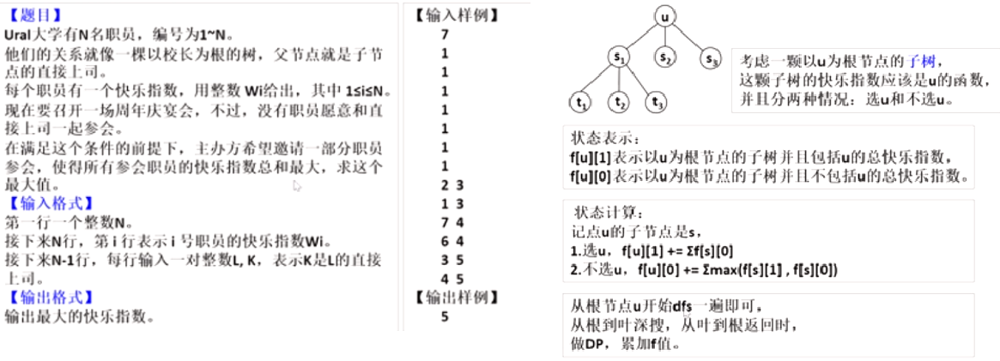
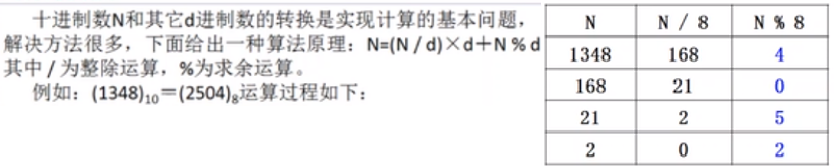
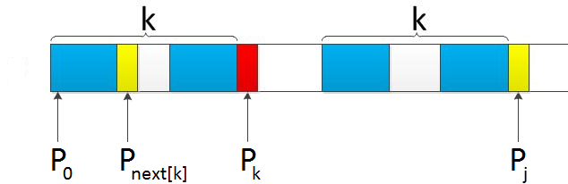
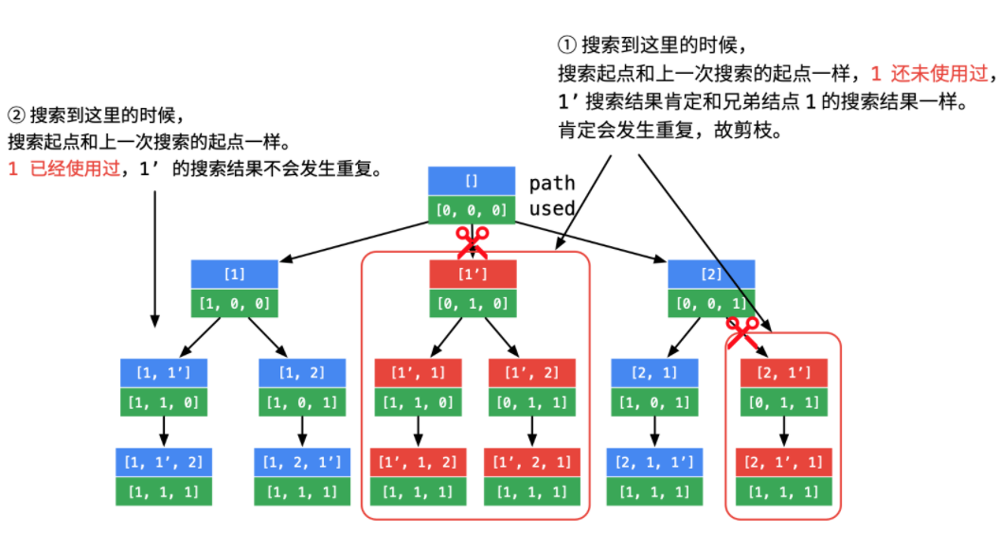

Algorithm
Binary Search
//二分查找, vec递增，
int binarySerach(std::vector<int> &vec, int target){
if(vec.size()==0 || target<vec[0] || target>vec[vec.size()-1])return -1;
int left=0, right=vec.size()-1;
while(left<=right){
int mid=left+(right-left)/2;
if(target==vec[mid])return mid;
else if(vec[mid] < target) left=mid+1;
else if(vec[mid] > target) right=mid-1;
}
return -1;
}
// 二分查找，寻找左侧边界, 即最左边的target
int binarySearchLSide(std::vector<int>& vec, int target){
if(vec.size()==0 || target<vec[0] || target>vec[vec.size()-1])return -1;
int left=0, right=vec.size()-1;
while(left<=right){
int mid=left+(right-left)/2;
if(target==vec[mid])right=mid-1; //收缩右侧边界，锁定左侧
else if(vec[mid] < target) left=mid+1;
else if(vec[mid] > target) right=mid-1;
}
if(left>=vec.size() || vec[left]!=target) return -1;
return left;
}
// 二分查找，寻找右侧边界，即最右边的target
int binarySearchRSide(std::vector<int>& vec, int target){
if(vec.size()==0 || target<vec[0] || target>vec[vec.size()-1])return -1;
int left=0, right=vec.size()-1;
while(left<=right){ //结束循环条件 right=left-1
int mid=left+(right-left)/2;
if(target==vec[mid])left=mid+1; //收缩左侧边界，锁定右侧
else if(vec[mid] < target) left=mid+1;
else if(vec[mid] > target) right=mid-1;
}
if(right<0 || vec[right]!=target) return -1;
else return right;
}
// 二分查找变形
// 数组A,将一个有序数组旋转，前面部分移动到后面，所以 A[0:x]是递增的，A[x+1:-1]是递增的，
// 即A[x+1]<A[-1]<A[0]<A[x-1];
// 数组中每个元素都互不相同; 当然也可以不旋转
// 求数组中最小值
int findMin(vector<int>& nums) {
int left=1, right=nums.size()-1, target=nums[0];
// 在比nums[0]小的元素中寻找最左侧
while(left<=right){
int mid=(left+right)/2;
if(nums[mid]<target)right=mid-1;
else left=mid+1;
}
if(left==nums.size())return nums[0];// 说明整个数组有序
return min(nums[0], nums[left]); // 由于前面递增部分有可能只有一个元素，所以需要判断nums[0]和
// 后面递增部分的第一个元素nums[left]大小
}
树形DP

vector<int> num_son; //存储每个节点的子节点个数
vector<vector<int>> sons; //存储每个节点的子节点
vector<int> w; //存储快乐指数
vector<bool> father; //该节点是否有父节点
void dfs(int root, vector<vector<int>>& dp){
dp[root][1] = w[root];
for(int i=0;i<num_son[root];i++){
int son = sons[root][i];
dfs(son, dp);
dp[root][1] += dp[son][0];
dp[root][0] += max(dp[son][0], dp[son][1]);
}
}
int main(){
int N;
cin >> N;
num_son.resize(N);
sons.resize(N);
w.resize(N);
father.resize(N);
vector<vector<int>> dp(N, vector<int>(2));
for(int i=0;i<N;i++)cin >> w[i];
//输入子节点和其父节点，0~N-1
for(int i=0;i<N-1;i++){
int x, y; //x为子节点，y为父节点
cin>>x>>y;
num_son[y]++;
sons[y].push_back(x);
father[x]=true;
}
int root=0;
while(father[root])root++;
dfs(root, dp);
cout<<"result:"<<max(dp[root][0], dp[root][1])<<endl;
return 0;
}
实现shuffle
要取得 [a,b] 的随机整数，使用 (rand() % (b-a+1)) + a;
要取得 (a,b] 的随机整数，使用 (rand() % (b-a)) +a+1;
#define randInt(a, b) ((rand()%(b-a+1))+a) //产生[a, b]之间的随机整数
int N=20;
vector<int> vec(N);
for(int i=0;i<N;i++)vec[i]=i;
void shuffle(vector<int>& vec){
srand((unsigned)time(NULL)); //采用时间作为随机数种子
for(int i=N-1;i>0;i--){ // i>0与i>=0效果一致
int j = randInt(0, i);
swap(vec[i], vec[j]);
}
//下面亦可
// for(int i=0;i<N;i++) // i<N与i<N-1, 效果一致，
// {
// int j = randInt(i, N-1);
// swap(vec[i], vec[j]);
// }
}
如何验证shuffle效果:
首先算法产生的结果必须有N!种，其次对于每种可能出现的结果的概率必须相等。
针对序列0~N-1，执行M次(如1万次或十万次)shuffle算法，记录各种结果的出现次数，各种结果的的出现次数应接近1/N!，这里N一般取个比较小的数，如5或6;
或者让数组中只有某一位为1，其余位为0，依旧执行M次shuffle算法，记录1出现在0~N-1位上的次数，每个位置出现次数应该接近。
void testShuffle(){
vector<int> vec{1, 0, 0, 0, 0};
int M=10000;
vector<int> res(5);
for(int i=0;i<M;i++){
shuffle(vec);
int j=0;
while(vec[j]==0)j++;
res[j]++;
}
for(auto& v:res){
cout<<v<<" ";
}
}
约瑟夫环
//0,1,···,n-1这n个数字排成一个圆圈， //从数字0开始，每次从这个圆圈里删除第M个数字（删除后从下一个数字开始计数）。
//这里打印的是删除顺序，下标基1
void Josephus2_1(int M, int N){
int a[N+1]; //存放指针，a[i]存放着下一个元素
int b[N+1]; //出链顺序
int i, j, k;
for(int i=1;i<N;i++)a[i]=i+1;
a[N]=1; //形成闭环
k=1; j=N;
for(i=1;i<=N;i++){
while(k<M){
j=a[j]; //移动指针
k++;
}
b[i]=a[j];
a[j] = a[a[j]];
k=1;
printf("%dout a[%d]=%d\n", b[i], j, a[j]);
}
for(int i=1;i<=N;i++)std::cout<<b[i]<<" "; //cout<<b[i]-1, 可以基0
std::cout<<std::endl;
}
//这里仅求出这个圆圈里剩下的最后一个数字
void Josephus3(int M, int N){
int f=0;
for(int i=2;i<=N;i++)
f = (f+M)%i;
std::cout<<f<<std::endl;
}
十进制转换
辗转相除法 
void trans(int target, int num){
//规定输出负数的num进制形式为 “-”+abs(target)的num进制
stack<int> st;
bool neg=false;
if(target<0){
target*=-1;
neg=true;
}
do{
st.push(target%num);
target /= num;
}while(target!=0);
if(neg)cout<<"-";
while(!st.empty()){
cout<<st.top();
st.pop();
}
}
// 转为16进制，对于负数，采用补码形式
class Solution {
public:
string toHex(int num) {
if(num==0)return "0";
string ans="";
unsigned int x = num;
while(x){
int c = x%16;
if(c>=10) c = (c-10)+'a';
else c += '0';
ans += c;
x >>= 4;
}
reverse(ans.begin(), ans.end());
return ans;
}
};
快速选择法
// 寻找第K大元素，也可用于计算TOPK，
class Solution {
public:
int findKth(vector<int> vec, int n, int k) {
// write code here
int left=0, right=n-1;
k = n-k; // 这里修改 k=k-1; 则求得就是第k小的元素
int pos=0;
while(true){
pos = quickFind(vec, left, right);
if(pos==k)break;
else if(pos < k)left=pos+1;
else right=pos-1;
}
return vec[pos]; //此时位置>=pos的元素，即为TOPK，整个数组是按增序进行快排的
}
private:
void median3(vector<int>& vec, int left, int right){
int mid = (left+right)/2;
if(vec[mid] < vec[left])
swap(vec[mid], vec[left]);
if(vec[right] < vec[left])swap(vec[left], vec[right]);
if(vec[mid] > vec[right])swap(vec[mid], vec[right]);
swap(vec[mid], vec[right-1]);
}
int quickFind(vector<int>& vec, int left, int right){
if(left==right)return left;
else if(left+2<=right){
median3(vec, left, right);
int pivot=vec[right-1];
int i=left, j=right-1;
while(true){
while(vec[++i] < pivot);
while(vec[--j] > pivot);
if(i<j)swap(vec[i], vec[j]);
else break;
}
swap(vec[i], vec[right-1]);
return i;
}else{
if(vec[left]>vec[right])
swap(vec[left], vec[right]);
return left;
}
}
};
LRU
// 手动实现双向链表
struct DNode{
int key, val;
DNode* next, *prev;
DNode(int k, int v):key(k), val(v), next(nullptr), prev(nullptr){}
};
class DoubleList{ //靠近链表尾部的数据表示最近使用的
private:
DNode* head, *tail;
int _size;
public:
DoubleList():_size(0){
head = new DNode(0, 0);
tail = new DNode(0, 0);
head->next=tail;
tail->prev=head;
}
void addLast(DNode* x){
x->prev=tail->prev;
x->next=tail;
tail->prev->next = x;
tail->prev=x;
_size++;
}
void remove(DNode* x, bool reuse){ //要求x一定在链表中
x->prev->next=x->next;
x->next->prev = x->prev;
_size--;
if(!reuse) //因为x节点可能是被永久删除，也有可能是被移到链表尾
delete x;
}
int removeFirst(){
if(head->next == tail)return 0;
int key=head->next->key;
remove(head->next, false);
return key;
}
int size() const{return _size;}
};
class LRUCache{
private:
unordered_map<int, DNode*> umap;
DoubleList cache;
int cap; //最大容量
//将某个key提升为最近使用的
void makeRecently(int key){
DNode* x=umap[key];
cache.remove(x, true);
cache.addLast(x);
}
//添加最近使用的
void addRecently(int key, int val){
DNode *x=new DNode(key, val);
cache.addLast(x);
umap[key] = x;
}
//删除某个key
void deleteKey(int key){
if(umap.count(key)==0)return;
DNode *x=umap[key];
cache.remove(x, false);
umap.erase(key);
}
//删除最久未使用的
void removeLeastRecently(){
umap.erase(cache.removeFirst());
}
public:
LRUCache(int capacity): cap(capacity){}
int get(int key){
if(umap.count(key)==0) return -1;
makeRecently(key); //将该数据提升为最近使用
return umap[key]->val;
}
void put(int key, int val){
if(umap.count(key)){
// deleteKey(key);
// addRecently(key, val);
umap[key]->val = val;
makeRecently(key);
return;
}
if(cache.size() == cap)
removeLeastRecently();
addRecently(key, val);
}
};
// 借用list容器
typedef list<int>::iterator LI;
struct node{
int val;
LI store;
node(int v, LI x): val(v), store(x){}
};
class LRUCache{
private:
int cap;
unordered_map<int, node*> key2node;
list<int> cache;
void makeRecently(int key){
node* x = key2node[key];
cache.erase(x->store);
cache.push_back(key);
x->store = --cache.end();
}
void removeLeastRecently(){
int key = cache.front();
key2node.erase(key);
cache.pop_front();
}
public:
LRUCache(int capacity): cap(capacity){}
int get(int key){
if(key2node.count(key)==0)return -1;
makeRecently(key);
return key2node[key]->val;
}
void put(int key, int val){
if(cap==0)return;
if(key2node.count(key)!=0){
key2node[key]->val = val;
makeRecently(key);
}else{
if(cache.size()==cap) removeLeastRecently();
cache.push_back(key);
key2node[key] = new node(val, --cache.end());
}
}
};
LFU
// 手动实现双向has链表
struct DNode2{
int key;
DNode2 *next, *prev;
DNode2(int k):key(k){}
};
class linkHash{
private:
unordered_map<int, DNode2*> umap;
DNode2 *head, *tail;
int _size=0;
public:
linkHash(){
head = new DNode2(-1); tail=new DNode2(-1);
head->next = tail; tail->prev=head;
}
~linkHash(){
while(head){
DNode2 *tmp=head->next;
delete head;
head=tmp;
}
}
void push_back(int key){//从尾部插入最新访问的
DNode2* x = new DNode2(key);
umap[key]=x;
x->prev = tail->prev;
x->next = tail;
tail->prev->next=x;
tail->prev=x;
_size++;
}
void remove(int key){
DNode2 *x=umap[key];
umap.erase(key);
x->prev->next = x->next;
x->next->prev = x->prev;
delete x;
_size--;
}
int removeFront(){//返回被删除节点的key
DNode2 *x=head->next;
int key = x->key;
remove(key);
return key;
}
int size()const {return _size;}
};
class LFUCache {
public:
LFUCache(int capacity): cap(capacity) {}
int get(int key) {
if(key2VF.count(key)==0)return -1;
increaseFre(key);
return key2VF[key].first;
}
void put(int key, int value) {
if(cap==0)return;
if(key2VF.count(key)!=0){
key2VF[key].first=value;
}else{
if(key2VF.size()==cap)
deleteLeastFreqKey();
key2VF[key] = make_pair(value, 0);
minFreq = 1; //插入新节点后
}
increaseFre(key);
}
private:
unordered_map<int, linkHash*> freq2key; // frequency -> list of key order by time
unordered_map<int, pair<int, int>> key2VF; // key-> val+fre
int cap=10; //默认值
int minFreq;
void increaseFre(int key){
int oldFreq = key2VF[key].second++;
int newFreq = key2VF[key].second;
if(oldFreq!=0){
freq2key[oldFreq]->remove(key);
if(freq2key[oldFreq]->size()==0)
{
freq2key.erase(oldFreq);
if(oldFreq==minFreq)minFreq++;
}
}
if(freq2key.count(newFreq)==0)
freq2key[newFreq] = new linkHash();
freq2key[newFreq]->push_back(key);
}
void deleteLeastFreqKey(){
linkHash* x = freq2key[minFreq];
int key = x->removeFront();
if(x->size()==0) freq2key.erase(minFreq);
key2VF.erase(key);
}
};
//借助list容器
typedef list<int>::iterator LI;
typedef list<int>* LP;
struct node{
int val;
int freq;
LI store;
node(int v, int f): val(v), freq(f){}
};
class LFUCache{
private:
size_t cap;
unordered_map<int, node*> key2VFI;
unordered_map<int, LP> freq2list;
int minFreq;
void increaseFreq(int key){
node *cur = key2VFI[key];
int oldFreq = (cur->freq)++;
int newFreq = cur->freq;
if(freq2list.count(oldFreq)!=0){
freq2list[oldFreq]->erase(cur->store);
if(freq2list[oldFreq]->size()==0){
freq2list.erase(oldFreq);
if(oldFreq==minFreq)minFreq++;
}
}
if(freq2list.count(newFreq)==0)
freq2list[newFreq] = new list<int>();
freq2list[newFreq]->push_back(key);
key2VFI[key]->store = --(freq2list[newFreq]->end());
}
void removeLeastFreqKey(){
int key = freq2list[minFreq]->front();
key2VFI.erase(key);
freq2list[minFreq]->pop_front();
if(freq2list[minFreq]->size()==0)
freq2list.erase(minFreq);
}
public:
LFUCache(int capacity):cap(capacity){}
int get(int key){
if(key2VFI.count(key)==0)return -1;
increaseFreq(key);
return key2VFI[key]->val;
}
void set(int key, int value){
if(cap==0)return;
if(key2VFI.count(key)!=0){
key2VFI[key]->val = value;
}else{
if(key2VFI.size()==cap)removeLeastFreqKey();
key2VFI[key] = new node(value, 0);
minFreq = 1;
}
increaseFreq(key);
}
};
KMP
递推求解next数组: 已知next[j](子串P[0, j-1]中前缀与后缀的交集中最长元素长度), 求解next[j+1]时，
若P[next[j]] == P[j]，则next[j+1]=next[j]+1=k+1; 否则需要寻找长度更短的相同前缀后缀, 即让k=next[k]，让新的P[k]与P[j]比较，如果k==-1，则next[j]=0。

void getPMT(string p, vector<int>& pmt){
int n=p.size();
int j=1, k=0;
while(j<n){
if(p[j]==p[k]){
pmt[j++] = ++k;
}else{
if(k)k=pmt[k-1];
else j++;
}
}
}
void getNext(std::vector<int>& next, string& p){
next[0] = -1;
int j=0, k=-1;
while(j<p.size()-1){
if(k==-1 || p[j]==p[k]){
next[++j] = ++k;
}else
k = next[k];
}
}
int KMP(string& s, string& p){
if(p.size() == 0 || s.size()<p.size())return -1;
vector<int> next(p.size());
/*
下标从0开始:
前缀子串，即由p[0, i]（0<=i<p.size()-2）构成的集合
后缀子串，即由p[j, p.size()-1](1<=j<=p.size()-1)构成的集合
PMT:部分匹配表
PMT[i]的含义是以p[i]字符结尾的后缀子串集合中，与以p[0]字符开头的前缀子串集合，两者交集的最大值；
当主串指针指向i, 模式串指向j时发生失配，可知s[i-j, i-1]与p[0, j-1]是相等的，
则s[i-PMT[j-1], i-1]自然与p[0, PMT[j-1]-1]是相等的(分别是模式子串p[0, j]有最大交集的后缀和前缀,
最大交集的长度即为PMT[j-1])
则此时让i保持不变，j回退到PMT[j-1]即可
为了方便编程，采用next数组代替PMT，将PMT数组右移一位，第一位置为-1(即规定next[0]=-1)形成，
这样j回退到next[j]即可
*/
getNext(next, p);
int i=0, j=0;
int sLen = s.size(), pLen = p.size();
while(i<sLen && j<pLen){
if(j==-1 || s[i]==p[j]){
i++;
j++;
}else j=next[j];
}
if(j==pLen)return i-j;
else return -1;
}
//寻找模板串p在源串s中出现的次数
class KMPSolution {
public:
int kmp(string p, string s) {
if(s.size()<p.size())return 0;
int i=0,j=0, slen=s.size(), plen=p.size(), pos=0;
vector<int> next(plen);
getNext(p, next);
int ans=0;
for(int i = 0, j = -1; i < slen; ++i)
{ /*
相当于p在s滑动，匹配成功一次ans++
*/
while(j >= 0 && s[i] != p[j + 1])j = next[j];
if(s[i] == p[j + 1])++j;
if(j + 1 == plen)
{
++ans;
j = next[j];
/*
此时s[i+1-plen, i]与p是相同的，下一步i向后移动
此时j回退到next[j]位置，因为p[0, next[j]-1]与s[i+1-next[j], i]是相同的
*/
}
}
return ans;
}
private:
void getNext(const string& p, vector<int>& next){
next[0]=-1;
int j=0,k=-1;
int len=p.size();
while(j<len-1){
if(k==-1 || p[j]==p[k]){
next[++j] = ++k;
}else k=next[k];
}
}
};

SunDay算法
int SundayStrMatch(string source, string pattern) {
int sSize = source.size(), pSize = pattern.size();
if(sSize<pSize || pSize==0)return -1;
unordered_map<char, int> shift;
for(int i=0;i<pSize;i++)shift[pattern[i]]=pSize-i;
int idx=0;
while(idx+pSize<=sSize){
string sub = source.substr(idx, pSize);
if(sub == pattern)return idx;
if(idx+pSize>=sSize)return -1;
if(shift.find(source[idx+pSize]) == shift.end())idx += pSize;
else idx += shift[source[idx+pSize]];
}
return -1;
}
组合-树
将排列组合问题抽象为树形结构
- 给定一个可包含重复数字的序列 nums ，按 任意顺序 返回所有 不重复 的全排列。
class Solution {
public:
vector<vector<int>> permuteUnique(vector<int>& nums) {
bool visited[nums.size()];
memset(visited, 0, nums.size());
vector<int> track;
sort(nums.begin(), nums.end());
backtrack(nums, track, visited);
return ans;
}
private:
vector<vector<int>> ans;
void backtrack(vector<int>& nums, vector<int>& track, bool* visited){
if(track.size()==nums.size()){
ans.emplace_back(track);
return;
}
for(int i=0;i<nums.size();i++){
/*
这是与46题中，不包含重复数字的全排列的重要区别；
因为事先需要对数组排序，相同的元素将会在相邻的位置
如: 1,1',1'',2;
依次为[1,1',1'',2]、[1,1',2,1''],此时回到令visited[1]=true，然后进入递归的时刻
从backtrack出来后，令visited[1]=false,此时visited[2]和visited[3]也为false,
循环到i=2时，由于nums[i]==nums[i-1]以及 !visited[i-1]所以跳过
结果中的1排序一定是 1,1',1''；
如果采用i>0 && visited[i-1] && nums[i]==nums[i-1]，结果中的1排序一定是1'',1',1
*/
if(visited[i] || (i>0 && !visited[i-1] && nums[i]==nums[i-1]))
continue;
track.emplace_back(nums[i]);
visited[i]=true;
backtrack(nums, track, visited);
visited[i]=false;
track.pop_back();
}
}
};

- 给定一个整数数组，可能包含重复元素，返回该数组所有可能的子集（幂集）。 解集不能包含重复的子集。
class Solution {
public:
vector<vector<int>> subsetsWithDup(vector<int>& nums) {
sort(nums.begin(), nums.end());
vector<int> track;
bool visited[nums.size()];
memset(visited, 0, nums.size());
dfs(nums, track, 0, visited);
return ans;
}
private:
vector<vector<int>> ans;
void dfs(vector<int>& nums, vector<int>& track, int start, bool* visited){
ans.push_back(track);
for(int i=start;i<nums.size();i++){
if(i>start && !visited[i-1] && nums[i]==nums[i-1])continue;
track.push_back(nums[i]);
visited[i] = true;
dfs(nums, track, i+1, visited);
visited[i] = false;
track.pop_back();
}
}
};
class Solution {
public:
vector<vector<int>> subsetsWithDup(vector<int>& nums) {
sort(nums.begin(), nums.end());
vector<int> track;
dfs(nums, 0, track);
return ans;
}
private:
vector<vector<int>> ans;
void dfs(vector<int>& nums, int start, vector<int>& track){
ans.push_back(track);
for(int i=start;i<nums.size();i++){
if(i>start && nums[i]==nums[i-1])continue;
track.push_back(nums[i]);
dfs(nums, i+1, track);
track.pop_back();
}
}
};

链表排序
class Solution {
public:
// 归并排序，自顶向下，time:O(nlog n), space:O(log N), 栈空间
ListNode* sortList(ListNode* head) {
if(!head || !head->next)return head;
else if(!head->next->next){
int val1 = head->val;
int val2 = head->next->val;
if(val1 > val2){
head->val = val2;
head->next->val = val1;
}
return head;
}
ListNode *fast = head, *slow=head;
while(fast && fast->next){
fast = fast->next->next;
slow = slow->next;
}
ListNode *lastHalf=slow->next;
lastHalf = sortList(lastHalf);
slow->next = nullptr;
ListNode *prevHalf = sortList(head);
ListNode *another;
if(prevHalf->val <= lastHalf->val){
head = prevHalf;
another = lastHalf;
}else{
head = lastHalf;
another = prevHalf;
}
// merge
ListNode *cur = head, *prev;
while(cur && another){
if(cur->val <= another->val){
prev = cur;
cur = cur->next;
}else{
ListNode *tmp=another->next;
prev->next=another;
another->next=cur;
prev = another;
another = tmp;
}
}
if(!cur)prev->next=another;
return head;
}
// space:O(1),自底向上
ListNode* sortList(ListNode* head) {
if (head == nullptr) return head;
int length = 0;
ListNode* node = head;
// 计算链表长度
while (node != nullptr) {
length++;
node = node->next;
}
ListNode* dummyHead = new ListNode(0, head); // 伪头节点
for (int subLength = 1; subLength < length; subLength <<= 1) {
ListNode* prev = dummyHead, *curr = dummyHead->next;
// while循环先两两合并长度为subLength的有序链表，
// for循环中，subLength长度每次扩大一倍
// 整体模型归并排序时，自顶向下分治的逆过程
while (curr != nullptr) {
ListNode* head1 = curr;
for (int i = 1; i < subLength && curr->next != nullptr; i++) {
curr = curr->next;
}
ListNode* head2 = curr->next;
curr->next = nullptr;
curr = head2;
for (int i = 1; i < subLength && curr != nullptr && curr->next != nullptr; i++) {
curr = curr->next;
}
ListNode* next = nullptr;
if (curr != nullptr) {
next = curr->next;
curr->next = nullptr;
}
ListNode* merged = merge(head1, head2);
prev->next = merged;
while (prev->next != nullptr) {
prev = prev->next;
}
curr = next;
}
}
return dummyHead->next;
}
ListNode* merge(ListNode* head1, ListNode* head2) {
ListNode* dummyHead = new ListNode(0);
ListNode* temp = dummyHead, *temp1 = head1, *temp2 = head2;
while (temp1 != nullptr && temp2 != nullptr) {
if (temp1->val <= temp2->val) {
temp->next = temp1;
temp1 = temp1->next;
} else {
temp->next = temp2;
temp2 = temp2->next;
}
temp = temp->next;
}
if (temp1 != nullptr) {
temp->next = temp1;
} else if (temp2 != nullptr) {
temp->next = temp2;
}
return dummyHead->next;
}
};
分数到小数
给定两个整数，分别表示分数的分子 numerator 和分母 denominator，以字符串形式返回小数。 如果小数部分为循环小数，则将循环的部分括在括号内。
class Solution {
public:
string fractionToDecimal(int numerator, int denominator) {
if(numerator==0)return "0";
else if(numerator==denominator)return "1";
unordered_map< int, int> memo;
string ans="", extra="";
//if((numerator>0 && denominator<0) || (numerator<0 && denominator>0))
if((numerator>0)^(denominator>0))
ans+='-';
long num=abs(numerator), denom = abs(denominator);
extra+=to_string(num/denom);
num %= denom;
if(num)extra+='.';
else return ans+extra; // 说明余数为0，直接返回
while(num!=0){
memo[num]=extra.size();
num*=10;
extra+=to_string(num/denom);
num %= denom;
if(memo.count(num)){ // 余数重复出现，说明出现循环
int pos=memo[num]; // 第一次出现前，extra的长度，[0, pos]不循环，[pos:-1]循环
extra = extra.substr(0, pos)+"("+extra.substr(pos, extra.size()-pos)+")";
break;
}
}
return ans+extra;
}
};
统计二进制中 1 的个数
int num1(int num){
int bit=0;
while(num){
bit++;
num &= num-1;
}
return bit;
}
完全二叉树节点个数
/*
时间复杂度为 O(logN * logN)
首先计算左右子树高复杂度为 logN;
而一个完全二叉树满足一个特性是两个子树必定一个是满二叉树，另一个是完全二叉树
则 代码中最后一个return，只有其中一个countNodes会递归下去，另一个会触发 hl==hr, 直接返回结果；
递归的复杂度为 logN(树的高度)*logN(每一层计算子树高度需要的复杂度)。
*/
// java
public int countNodes(TreeNode root){
TreenNode left=root, rigth=root;
// 计算左右子树高度
int hl=0, hr=0;
while(left!=null){
hl++;
left = root.left;
}
while(right!=null){
hr++;
right = root.right;
}
if(left==right) // 说明是满二叉树
return (int)Math.pow(2, hl) - 1;
return 1 + countNodes(root.left) + countNodes(root.right);
}